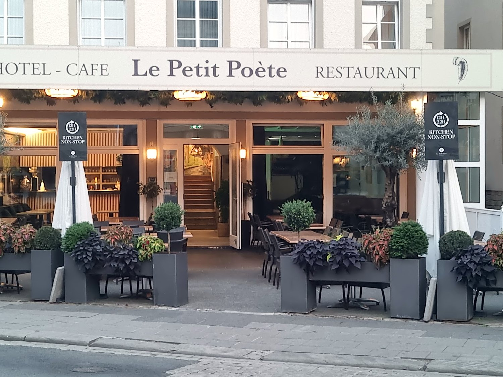
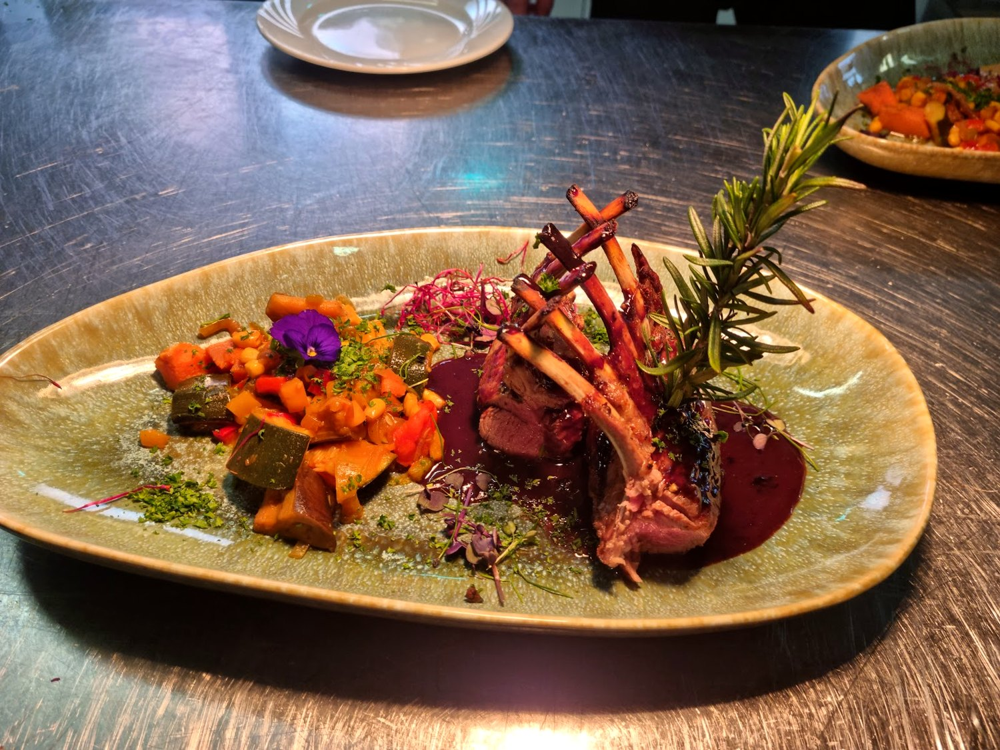
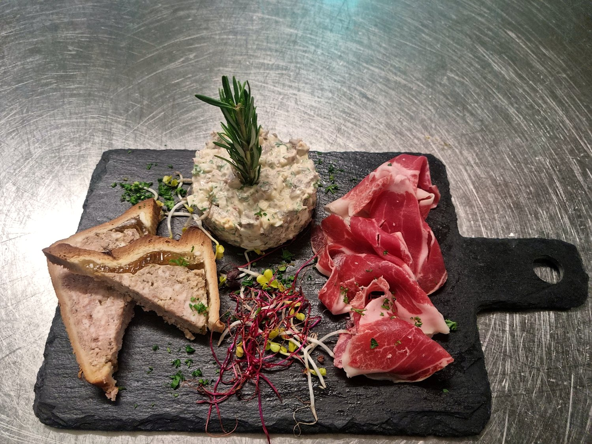
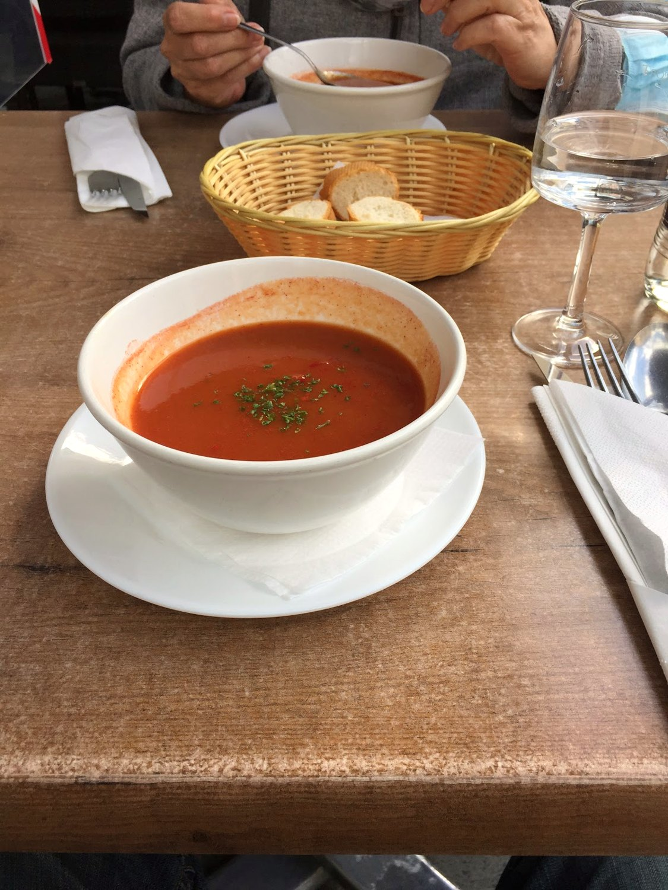
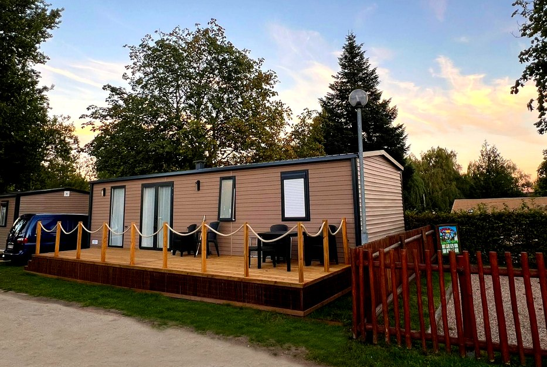
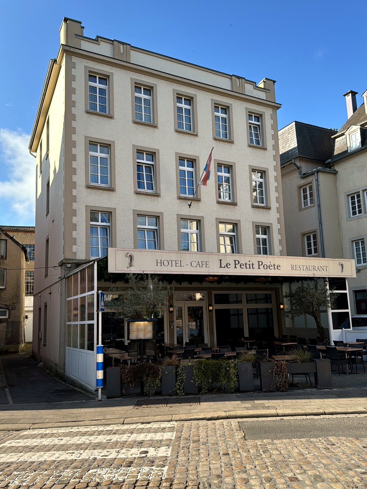

Le Petit Poète
À la table du poète, au cœur d'Echternach — brasserie et grillades dans la plus vieille ville du pays.
La brasserie,et le grill.
Les classiques d'une bonne brasserie — cordon bleu, bouchée à la reine, rognons à la moutarde — et les grandes grillades : côtes d'agneau, filet de bœuf, black angus cuit à basse température.
On s'attable comme à la maison, sans manière : une cuisine généreuse, des produits qui parlent d'eux-mêmes, et l'on prend le temps. Terrasse sur la place aux beaux jours.

Fait maisonGénéreux, sans manière
Grillades et plats de brasserie, terrine et charcuterie, potage du jour — et une terrasse sur la place, aux beaux jours.





Au cœurd'Echternach.
La table est posée dans la plus vieille ville du Luxembourg — à deux pas de l'abbaye bénédictine et de la basilique, aux portes du Mullerthal, la « Petite Suisse » luxembourgeoise.
On vient y déjeuner après la vieille ville, dîner avant le concert, ou s'attarder en terrasse sur la place. Une adresse de passage et d'habitués, à la fois. Echternach fut la ville du scriptorium de l'abbaye, où les moines enluminaient leurs manuscrits — un clin d'œil que porte l'enseigne du Petit Poète.

Les viandes
Le cœur de la carte : les classiques de brasserie et les grandes grillades. Voici la sélection viandes, relevée sur la carte de la maison.
Les classiques
Le grill
Les à-côtés
Au choix, avec les viandes
Prix relevés sur la carte de la maison (sélection « Les Viandes »). Les entrées, poissons, plats du jour et desserts ne figurent pas ici et sont à confirmer sur place.
Nous trouver
centre historique · rue exacte à confirmer
Horaires à confirmer